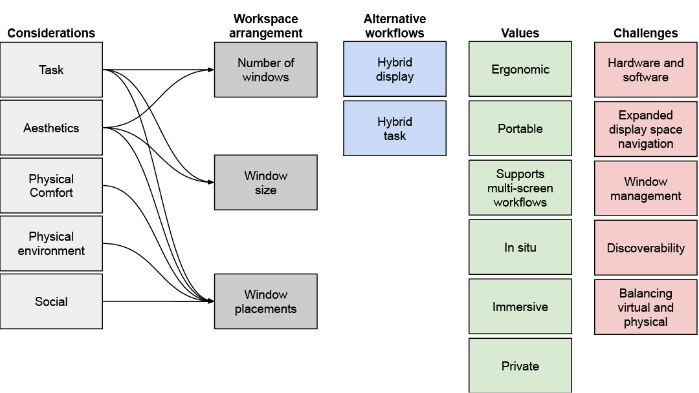
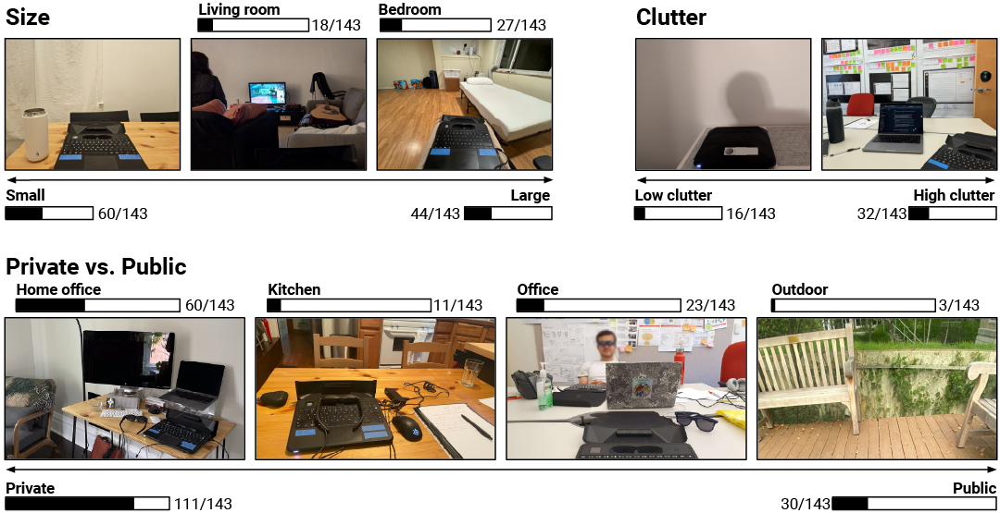

Augmented Reality (AR) is increasingly positioned as a tool for knowledge work, providing beneficial affordances such as a virtually limitless display space that integrates digital information with the user's physical surroundings. However, for AR to supplant traditional screen-based devices in knowledge work, it must support prolonged usage across diverse contexts. Until now, few studies have explored the effects, opportunities, and challenges of working in AR outside a controlled laboratory setting and for an extended duration. This gap in research limits our understanding of how users may adapt its affordances to their daily workflows and what barriers hinder its adoption. In this paper, we present findings from a longitudinal diary study examining how participants incorporated an AR laptop -- Sightful's Spacetop EA -- into their daily work routines. 14 participants used the device for 40-minute daily sessions over two weeks, collectively completing 103 hours of AR-based work. Through survey responses, workspace photographs, and post-study interviews, we analyzed usage patterns, workspace configurations, and evolving user perceptions. Our findings reveal key factors influencing participants' usage of AR, including task demands, environmental constraints, social dynamics, and ergonomic considerations. We highlight how participants leveraged and configured AR's virtual display space, along with emergent hybrid workflows that involved physical screens and tasks. Based on our results, we discuss both overlaps with current literature and new considerations and challenges for the future design of AR systems for pervasive and productive use.
Themes governing users' considerations and experiences:

Usage for each environment:

Please see the paper for more details and results.
Acknowledgements
We thank our project sponsors and collaborators from Sightful, particularly Oren Zuckerman, Tom Hitron and Tamir Berliner.
This research was partially supported by Sightful, which provided funding and hardware.
The authors gratefully acknowledge their contribution to this project.
We also thank all involved peers and participants.
Yi Fei Cheng received partial support from the Croucher Foundation.
The views expressed in this paper are those of the authors and do not necessarily reflect the views of Sightful.